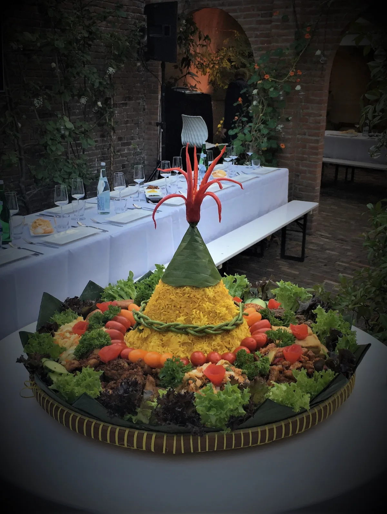
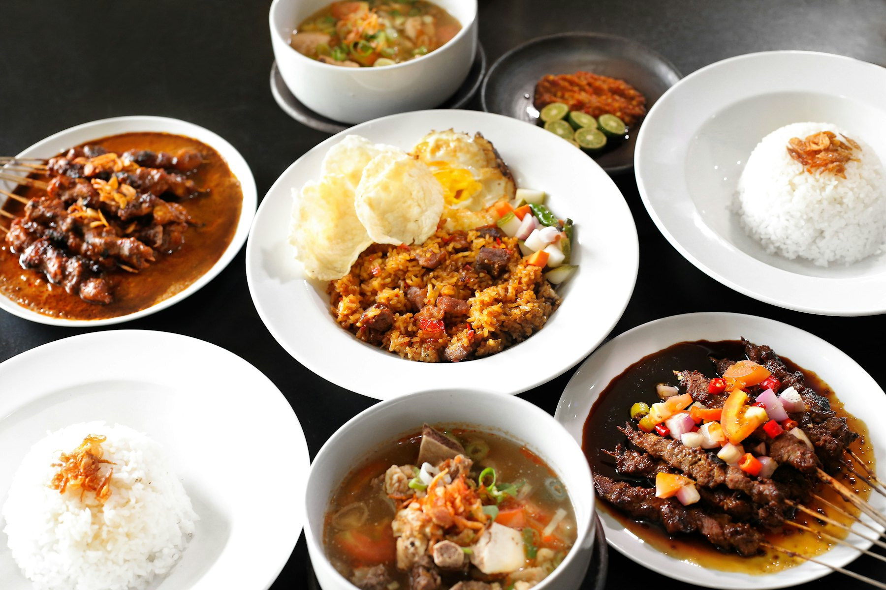

Menu 1
vanaf € 21,50 p.p.
bij minimaal 10 personen
- Witte rijst *
- 2 soorten vlees- of kipgerechten
- 2 soorten groentegerechten
- 2 stokjes kip- of varkenssaté
- 1 sambal goreng telor
- Atjar komkommer
- Kroepoek
Selamat datang
Verse producten, een passie voor koken en traditionele recepten die van generatie op generatie overgaan. Kom proeven in ons eethuisje in Wassenaar of Voorburg, neem het mee naar huis of laat ons uw feest verzorgen.

De beste toko van Nederland. In 2016 stond Toko Menteng met trots op de eerste plek van Indoweb's jaarlijkse lijst 'Beste Toko van Nederland'. We hebben jaren hard gewerkt voor die erkenning en zijn daarna niet gestopt: nog steeds koken we elke dag met liefde en plezier.
De Indonesische keuken is zeer divers. Indonesië bestaat uit ongeveer 17.000 eilanden, waarvan er zo'n 6.000 bewoond zijn. Veel eilanden kennen hun eigen recepten, bereid met specifieke kruiden.
Op Sumatra koken ze in het algemeen veel pittiger dan op Java. Oost-Javaanse gerechten zijn doorgaans wat zoeter, onder meer door goela djawa, de Javaanse bruine suiker. Wees vooral niet bang om te vragen wat iets is, of om iets nieuws te proberen.
De actuele kaart van Toko Menteng Wassenaar. Alles is ook mee te nemen; bestel gerust vooraf per telefoon.
Bestellen in Wassenaar: 070 449 40 62 · in Voorburg: 070 300 05 03
Witte rijst, 2 kip-/vleesgerechten, 1 groentegerecht en sambal goreng telor
Witte rijst, 3 groentegerechten en sambal goreng telor
Witte rijst, 2 kip-/vleesgerechten, 1 groentegerecht, sambal goreng telor met 2 stokjes kip- of varkenssaté
Witte rijst, 3 kip-/vleesgerechten, sambal goreng telor, 1 groentegerecht, atjar komkommer en krupuk borrel
Gele rijst, Indische frikandel, 1 kip-/vleesgerecht, 1 groentegerecht, sambal goreng telor, atjar komkommer en krupuk borrel
Lontong, sayur lodeh, 1 kip-/vleesgerecht en sambal goreng telor
Gestoomde groenten met pindasaus en krupuk borrel
Gebakken tahu en ei met pindasaus
Indonesische kippensoep met ei en taugé
Indonesische rundvleessoep
* In plaats van witte rijst kunt u kiezen voor nasi goreng, bami goreng, mihoen goreng, nasi kuning of lontong: + € 1,00.
Stel uw eigen bakje samen: alle kip-, vlees- en visgerechten worden per 100 gram afgewogen.
Prijzen per 100 gram, in euro.
Groentegerechten per 100 gram, in euro.
Deze gerechten stonden op onze eerdere kaart. Vraag in de toko of per telefoon wat er vandaag is en wat het kost.
Loempia, gebakken banaan, risoles (kip), pastei, lemper (kip), kue lapis, Indische frikandel, spekkoek, krupuk borrel, emping naturel
Broodje vlees en broodje vegetarisch, tussen 12.00 en 15.00 uur
Geniet met uw gezelschap van de authentieke Indonesische keuken, thuis, op kantoor of op uw feestlocatie. U stelt uw gerechten zelf samen en wij zorgen dat het eten tafelklaar en warm bij u wordt afgeleverd. Alles is mogelijk, ook catering voor feesten en speciale gelegenheden.

Vul uw wensen in, dan nemen wij contact met u op. Liever direct overleggen? Bel 070 300 05 03 of mail info@tokomenteng.nl.
Stadhoudersplein 25
2241 EA Wassenaar
Plaats direct uw bestelling: 070 449 40 62
| maandag | 16:00 - 20:00 |
|---|---|
| dinsdag | 12:00 - 20:00 |
| woensdag | 12:00 - 20:00 |
| donderdag | 12:00 - 20:00 |
| vrijdag | 12:00 - 20:00 |
| zaterdag | 12:00 - 20:00 |
| zondag | gesloten |
Franse Kerkstraat 12
2271 CN Voorburg
Telefoon 070 300 05 03
Mobiel 06 25 58 87 48
| maandag | gesloten |
|---|---|
| dinsdag | 12:00 - 20:00 |
| woensdag | 12:00 - 20:00 |
| donderdag | 12:00 - 20:00 |
| vrijdag | 12:00 - 20:00 |
| zaterdag | 12:00 - 20:00 |
| zondag | 16:00 - 20:00 |